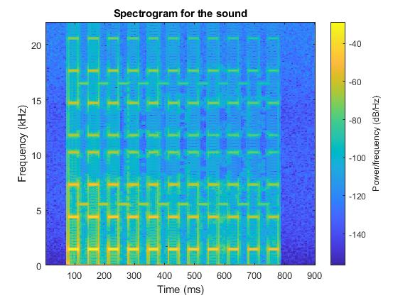
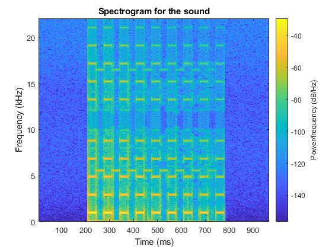
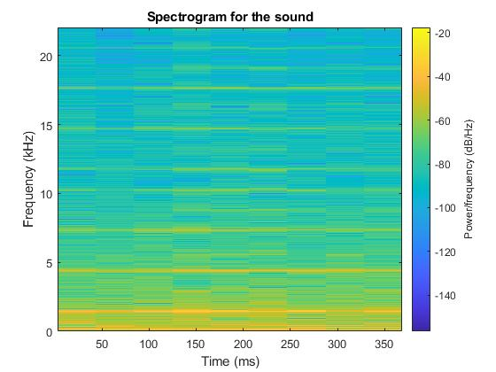
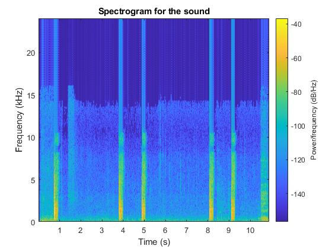
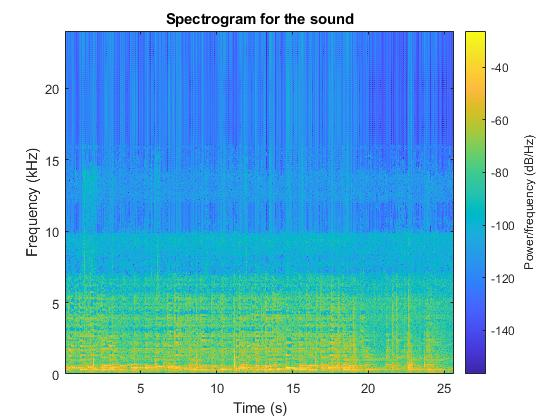
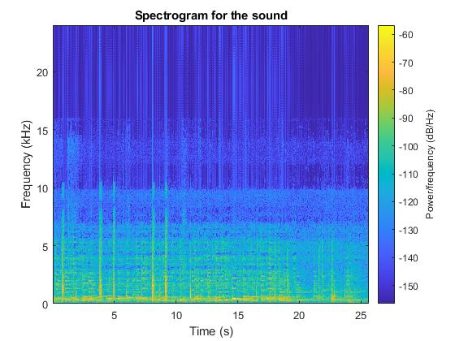

List of Audio Libraries and References
The following list of C / C++ libraries and references for audio processing is provided for your convenience only.
You are not required to use any of these libraries / references for this homework.
-
Keep It Simple, Stupid FFT library.
-
Audacity. Useful for analyzing raw audio (waves) and modifying audio files (ie. stereo <--> mono).
-
Example code for computing the spectrogram in C: alsgram.zip.
Part 1a: Slow DFT
Implement the Discrete Fourier Transform (DFT) in C, C++, MATLAB, Java, or Python. Implement the slow version that multiplies the transform matrix by the input vector in O(N2) time. Your code should support input vectors of size up to 1024. In addition, you must implement your own functions to deal with complex numbers.
class Complex:
def __init__(self, real=0.0, imag=0.0):
self.real = real
self.imag = imag
def __add__(self, other):
return Complex(self.real + other.real, self.imag + other.imag)
def __sub__(self, other):
return Complex(self.real - other.real, self.imag - other.imag)
def __mul__(self, other):
return Complex(self.real * other.real - self.imag * other.imag,
self.real * other.imag + self.imag * other.real)
def __str__(self):
return f"{self.real:.2f} + {self.imag:.2F}i"
def dft(input_vector):
N = len(input_vector)
output_vector = [Complex() for _ in range(N)]
for k in range(N):
sum = Complex()
for n in range(N):
angle = 2 * 3.141592653589793 * k * n / N
w = Complex(math.cos(angle), -math.sin(angle))
sum = sum + w * input_vector[n]
output_vector[k] = sum
return output_vector
# Helper function to convert a list of real numbers to a list of Complex numbers
def item_to_complex(input_list):
return [Complex(x, y) for x,y in input_list]
# Example usage
import math
import random
# Generate a list of 1024 tuples with random integer values
length = 1024
random_list = [(random.randint(-10, 10), random.randint(-10, 10)) for _ in range(length)]
# Input vector of real numbers
input_vector = item_to_complex(random_list)
# for item in input_vector:
# print(item)
output_vector = dft(input_vector)
# Display the DFT result
# for c in output_vector:
# print(c)
def display(input_list, output_list):
print("-----Input vector----\n")
for item in input_list:
print(f"{item}")
print("\n")
print("-----Output vector----\n")
for item in output_list:
print(f"{item}")
# Display the results
display(input_vector, output_vector)
Part 1b: Slow IDFT
Implement the Inverse Discrete Fourier Transform (IDFT) in C, C++, MATLAB, Java, or Python. Implement the slow version that multiplies the transform matrix by the input vector in O(N2) time. Your code should support input vectors of size up to 1024. In addition, you must implement your own functions to deal with complex numbers.
// Insert your code here
import math
class Complex:
def __init__(self, real=0.0, imag=0.0):
self.real = real
self.imag = imag
def __add__(self, other):
return Complex(self.real + other.real, self.imag + other.imag)
def __sub__(self, other):
return Complex(self.real - other.real, self.imag - other.imag)
def __mul__(self, other):
return Complex(self.real * other.real - self.imag * other.imag,
self.real * other.imag + self.imag * other.real)
def __truediv__(self, other):
if isinstance(other, (int, float)): # Simple division by scalars
return Complex(self.real / other, self.imag / other)
raise NotImplementedError("Division not supported for types other than scalar")
def __str__(self):
return f"{self.real:.2f} + {self.imag:.2f}i"
def idft(input_vector):
N = len(input_vector)
output_vector = [Complex() for _ in range(N)]
for k in range(N):
sum = Complex()
for n in range(N):
angle = 2 * math.pi * k * n / N
w = Complex(math.cos(angle), math.sin(angle)) # Notice the sign change here
sum = sum + w * input_vector[n]
output_vector[k] = sum / N # Normalizing by dividing by N
return output_vector
def item_to_complex(input_list):
return [Complex(x, y) for x, y in input_list]
# Example usage
import random
# Generate a list of tuples with random integer values for demonstration
length = 1024
random_list = [(random.randint(-10, 10), random.randint(-10, 10)) for _ in range(length)]
# random_list = [ (2, -23), (16, -5), (-20, -5), (-2, 5)]
# Convert tuples to Complex numbers
input_vector = item_to_complex(random_list)
# Compute the IDFT
output_vector = idft(input_vector)
# Function to display the vectors
def display(input_list, output_list):
print("-----Input vector----\n")
for item in input_list:
print(f"{item}")
print("\n-----Output vector----\n")
for item in output_list:
print(f"{item}")
# Display the results
display(input_vector, output_vector)
Part 2a: FFT
Implement the Fast Fourier Transform (FFT) in C, C++, MATLAB, Java, or Python. Implement the fast version that uses recursion and runs in O(n log2 n) time. Note that you are not allowed to use MATLAB's implementation nor any other existing library for this problem. Your code should support input vectors of size up to 1024. Use your code from Part 1a to cross-check your implementation. In part 2, you can use any library functions that work with complex numbers (but not in part 1).
class Complex:
def __init__(self, real=0.0, imag=0.0):
self.real = real
self.imag = imag
def __add__(self, other):
return Complex(self.real + other.real, self.imag + other.imag)
def __sub__(self, other):
return Complex(self.real - other.real, self.imag - other.imag)
def __mul__(self, other):
return Complex(self.real * other.real - self.imag * other.imag,
self.real * other.imag + self.imag * other.real)
def __truediv__(self, other):
if isinstance(other, (int, float)):
return Complex(self.real / other, self.imag / other)
raise NotImplementedError("Division not supported for types other than scalar")
def __str__(self):
return f"{self.real:.2f} + {self.imag:.2f}i"
@staticmethod
def exp(theta):
"""Compute e^(i*theta) using Euler's formula"""
from math import cos, sin
return Complex(cos(theta), sin(theta))
def fft(x):
N = len(x)
if N <= 1:
return x
even = fft(x[0::2])
odd = fft(x[1::2])
T = [Complex.exp(-2 * 3.141592653589793 * k / N) * odd[k] for k in range(N // 2)]
return [even[k] + T[k] for k in range(N // 2)] + [even[k] - T[k] for k in range(N // 2)]
def display(input_list, output_list):
print("-----Input vector----\n")
for item in input_list:
print(f"{item}")
print("\n-----Output vector----\n")
for item in output_list:
print(f"{item}")
# Example usage
if __name__ == "__main__":
# Generate a sample input vector of Complex numbers (length must be a power of 2)
# x = [Complex(0.0, 0.0) for _ in range(8)] # Example with zeros
# x[1] = Complex(1.0, 0.0) # Adding a non-zero element
x = input_vector # from part 1a
# Compute FFT
X_fft = fft(x)
display(x, X_fft)
# Print the FFT result
Part 2b: IFFT
Implement the Inverse Fast Fourier Transform (IFFT) in C, C++, MATLAB, Java, or Python. Implement the fast version that uses recursion and runs in O(n log2 n) time. Note that you are not allowed to use MATLAB's implementation nor any other existing library for this problem. Your code should support input vectors of size up to 1024. Use your code from Part 1b to cross-check your implementation. In part 2, you can use any library functions that work with complex numbers (but not in part 1).
class Complex:
def __init__(self, real=0.0, imag=0.0):
self.real = real
self.imag = imag
def __add__(self, other):
return Complex(self.real + other.real, self.imag + other.imag)
def __sub__(self, other):
return Complex(self.real - other.real, self.imag - other.imag)
def __mul__(self, other):
return Complex(self.real * other.real - self.imag * other.imag,
self.real * other.imag + self.imag * other.real)
def __truediv__(self, other):
if isinstance(other, (int, float)):
return Complex(self.real / other, self.imag / other)
raise NotImplementedError("Division not supported for types other than scalar")
def __str__(self):
return f"{self.real:.2f} + {self.imag:.2f}i"
@staticmethod
def exp(theta):
"""Compute e^(i*theta) using Euler's formula"""
from math import cos, sin
return Complex(cos(theta), sin(theta))
def fft(x):
N = len(x)
if N <= 1:
return x
even = fft(x[0::2])
odd = fft(x[1::2])
T = [Complex.exp(-2 * 3.141592653589793 * k / N) * odd[k] for k in range(N // 2)]
return [even[k] + T[k] for k in range(N // 2)] + [even[k] - T[k] for k in range(N // 2)]
def ifft(x):
N = len(x)
if N <= 1:
return x
# Conjugate the complex numbers
x_conjugate = [Complex(a.real, -a.imag) for a in x]
# Compute FFT on conjugated input
X_fft_conjugate = fft(x_conjugate)
# Conjugate the computed FFT and normalize
X_ifft = [Complex(a.real, -a.imag) / N for a in X_fft_conjugate]
return X_ifft
def display(input_list, output_list):
print("-----Input vector----\n")
for item in input_list:
print(f"{item}")
print("\n-----Output vector----\n")
for item in output_list:
print(f"{item}")
if __name__ == "__main__":
# Assuming input_vector is defined somewhere in your code as shown previously
# input_vector = [Complex(1, -1), Complex(1, 0), Complex(1, 1), Complex(0, 0)] # Sample input
# First compute the FFT of the input
fft_result = fft(input_vector)
print("FFT Result:")
display(input_vector, fft_result)
# Then compute the IFFT of the FFT result
ifft_result = ifft(fft_result)
print("\nIFFT Result (Should closely resemble the original input):")
display(fft_result, ifft_result)
Part 3a: FFT check
Using your implementation from Part 2a, compute the Discrete Fourier Transform of the following vector:
[0, 0.7071, 1, 0.7071, 0, -0.7071, -1, -0.7071]
Note: you may want to use sqrt(2)/2 instead of 0.7071.
// Insert your resulting vector here [0.0000 + 0.0000i, 0.0000 + -4.0000i, 0.0000 + 0.0000i, 0.0000 + 0.0000i, 0.0000 + 0.0000i, -0.0000 + -0.0000i, 0.0000 + 0.0000i, -0.0000 + 4.0000i]
Compare your output with the output generated by MATLAB's fft() method for the same vector 'x'. Include the result below, and point out any discrepancies. You may also use one of the FFT libraries above, if you choose.
Compare your output with the output generated by MATLAB's fft() method for the same vector 'x'. Include the result below, and point out any discrepancies. You may also use one of the FFT libraries above, if you choose.
// Insert your new resulting vector here [0.0000 + 0.0000i, 0.0000 - 4.0000i, 0.0000 + 0.0000i, 0.0000 + 0.0000i, 0.0000 + 0.0000i, 0.0000 - 0.0000i, 0.0000 + 0.0000i, 0.0000 + 4.0000i] // Insert any comments here Using zero-indexing, the 5th and the 7th complex numbers' real components differ in vector directions. However, this is inconsquential as the real number in both cases is 0. Aside this, both resulting vectors are equal in magnitude and phase.
Part 3b: IFFT check
Using your implementation from Part 2b, compute the inverse Discrete Fourier Transform of the following vector:
[0, -4i, 0, 0, 0, 0, 0, 4i]
// Insert your resulting vector here [0.0000 + -0.0000i, 0.7071 + -0.0000i, 1.0000 + -0.0000i, 0.7071 + -0.0000i, 0.0000 + 0.0000i, -0.7071 + 0.0000i, -1.0000 + 0.0000i, -0.7071 + 0.0000i]
Compare your output with the output generated by MATLAB's ifft() method for the same vector 'X'. Include the result below, and point out any discrepancies. You may also use one of the IFFT libraries above, if you choose.
// Insert your new resulting vector here [ 0 , 0.7071 , 1.0000 , 0.7071 , 0 , -0.7071 , -1.0000 , -0.7071] // Insert any comments here Just like in part 3a, the results from the IFFT implementations are equal in magnitude and in phase. the only obvious difference is the sign of the imag component of the first four complex numbers from python, which is insignificant since it is 0.
Part 4a
Using any FFT and IFFT implementation, compute and plot the spectrograms for the following 3 audio files. In case you are curious, these audio snippets came from a video game.
| Audio Data | Spectrogram |
|---|---|
|  | |
|  | |
|  |
// Insert your code here
%%%%%%%%%%%%%%%%%%%%%%%%%%%%%%%%%%%%%%%%%%%%%%%%%%%%%%%%%%%%%%%%%
% Read from a WAV file and plot the Spectrogram
%%%%%%%%%%%%%%%%%%%%%%%%%%%%%%%%%%%%%%%%%%%%%%%%%%%%%%%%%%%%%%%%%
clear all;close all; clc;
[Y,fs]=audioread('paddle_widening_mono.wav'); % read the WAV file
figure;
plot(1:1000,Y(1:1000), 'b.') % plot the first 1000 samples
xlabel('Sample number (only the first 1000)');
ylabel('Y');
title('Discrete Audio Samples');
% Replot as a continuous function
figure;
plot(1:1000,Y(1:1000), 'b') % plot the first 1000 samples
xlabel('Sample number (only the first 1000)');
ylabel('Y');
title('Interpolation of the Audio Samples');
% Y - audio data samples
% 512 - window size (in samples)
% 256 - overlap (in samples)
% 512 - FFT size (in samples)
% fs - sampling frequency (in Hz)
% 'yaxis' - put the frequencies along the y axis
figure;
% spectrogram(Y, 512, 256, fs/10, fs, 'yaxis'); %for first two sounds
spectrogram(Y, 2048, 256, fs/10, fs, 'yaxis'); % for third sound
title('Spectrogram for the sound');
% store the spectrogram data in the complex matrix S
% S=spectrogram(Y, 10, 1, 5, fs, 'yaxis');
% play it
% sound(Y, fs)
Part 4b
Repeat what you did in part 4a, but now process three audio files that you recorded while playing your favorite game. Describe how you recorded the audio and what parameters were used (e.g., sampling frequency, duration). Also, describe the parameters that you used to compute the spectrograms (you can put this in the comments for your code). Modify the HTML template so that your files are linked and your spectrograms are shown to the right of each audio file. Replace the three audio files in this folder with your own files.
| Audio Data | Spectrogram |
|---|---|
|  | |
|  | |
|  |
// Insert your code here
I recorded the first two sounds with my Iphone 14 Pro voice memo recorder which samples at 48 KHz. Both sounds are from chess game with the first without background music and the second with background music.
Due to lack of varities, i decided to reconstruct new sound using first and second sound. Since the first two have different time length, first(10s ) and second (25s), i initially pad the first sound with zero and then scaled down both sounds by different factors as shown in the code before subtractions.
For the spectogram, i used a window size of 1024, with 50% overlap (512), nFFT used is one-tenth of the sampling frequency (4800)
%%%%%%%%%%%%%%%%%%%%%%%%%%%%%%%%%%%%%%%%%%%%%%%%%%%%%%%%%%%%%%%%% Code %%%%%%%%%%%%%%%%%%%%%%%%%%%%%%%%%%%%%%%%%%%%%%%%%%%%%%%%%%%%%%%%%
clear all;close all; clc;
[v1,fs1]=audioread('chess_2.m4a'); % read the WAV file
[v2,fs2]=audioread('chess.m4a'); % read the WAV file
% Determine the length of each vector
length1 = length(v1);
length2 = length(v2);
% Find the difference in lengths
length_diff = abs(length1 - length2);
% Pad the shorter vector with zeros
if length1 < length2
v1 = [v1; zeros( length_diff, 1)];
elseif length2 < length1
v2 = [v2; zeros( length_diff, 1)];
end
% Now that they are the same length, add them
Y = v1/50 - v2/10;
figure;
plot(Y(1:end), 'b') % plot the first 1000 samples
xlabel('Sample number (only the first 1000)');
ylabel('Y');
title('Interpolation of the Audio Samples');
figure;
spectrogram(Y, 1024, 512, fs1/10, fs1, 'yaxis'); % for third sound
title('Spectrogram for the sound');
audiowrite('modulatedSound.wav', Y, fs1)
Part 5
Your task is to write a program that can detect a single note in an audio data and print it. The program should handle audio generated by different musical instruments. The notes will be restricted to piano notes listed in this Wikipedia page (also cached here in PDF), but any of these notes may be the one. The program should print the note in the scientific notation.
Hint: one way to solve this problem is to perform frequency-domain analysis (e.g., using a spectrogram) of the audio data and look for the location of peaks. The highest peak should be at the frequency of the note.
Students with perfect pitch are not exempt from solving this problem. The note must be detected by the program and not by the programmer.
Part 5a. Piano
| Audio Data | Note | Program Output |
|---|---|---|
| C4 | C5. | |
| B2 | B4. | |
| F6 | F6. | |
| F5. | F5. | |
| A5. | A5. | |
| B4. | B4. | |
| G3. | G3. |
// Insert your code here
import numpy as np
from scipy.io.wavfile import read
from scipy.signal import find_peaks
# Load the audio file (assuming it's a WAV file)
# sampling_rate, data = read('c4-piano.wav')
sampling_rate, data = read('piano-note7.wav')
# If the data is stereo, convert it to mono
if len(data.shape) > 1:
data = data.mean(axis=1)
# Apply a Hanning window
windowed_data = data * np.hanning(len(data))
# Perform the FFT
fft_spectrum = np.fft.fft(windowed_data)
frequencies = np.fft.fftfreq(len(fft_spectrum), 1/sampling_rate)
# Find the peak frequency
magnitude = np.abs(fft_spectrum) # Get the magnitude
peak_index = np.argmax(magnitude[:len(data)//2]) # Only look at the first half of the spectrum
peak_frequency = frequencies[peak_index]
# print(peak_frequency)
# Function to map frequency to piano note
A4_freq = 440.0
# Define the standard key number for A4
A4_key = 49
def frequency_to_note(frequency):
# Calculate the key number for the given frequency
n = 12 * np.log2(frequency/A4_freq) + A4_key
# Round the key number to the nearest integer to map it to the closest key
n = int(round(n))
# Define the names of the notes in one octave
note_names = [
'A', 'A#', 'B', 'C', 'C#', 'D', 'D#', 'E', 'F', 'F#', 'G', 'G#'
]
# Calculate the octave
# octave = (n // 12) - 1
octave = (n + 8)//12
# Get the note name from the note names array
note_index = (n % 12) - 1
note_name = note_names[note_index]
# Combine the note name and the octave
return f"{note_name}{octave}"
# Get the note in scientific pitch notation
note = frequency_to_note(peak_frequency)
# Print the note
print(note)
Part 5b. Different Instruments
| Instrument | Audio Data | Note | Program Output |
|---|---|---|---|
| Piano | C4 | C5. | |
| Electric Guitar | C4 | G4. | |
| Violin | A4 | A#4. | |
| Violin | A#5. | A#5. | |
| Trumpet | C7. | C7. | |
| Trumpet | E4. | E4. | |
| Tuba | F#4 | F#4 | |
| Bassoon | A#4. | A#4. | |
| Marimba | E6. | E6. | |
| Marimba | B5. | B5. |
Ditto
Extra Credit 1
In this problem you have to write a program that can recognize single notes in a sequence and print them in the same order as they are played. The program should print the note in the scientific notation. There are no chords in the audio data.
Part A. Short Piano Melodies, Single Notes
| Audio Data | Notes | Program Output |
|---|---|---|
| C4 C4 G4 G4 A4 A4 G4 | Output of your program. | |
| Output of your program. | Output of your program. | |
| Output of your program. | Output of your program. |
// Insert your code here
Part B. Short Melodies Played with Different Instruments, Single Notes
| Instrument | Audio Data | Notes | |
|---|---|---|---|
| Electric Piano | C#2 C#2 C#2 C#2 B2 B2 B2 C#3 D3 | Output of your program. | |
| Electric Piano | Output of your program. | Output of your program. | |
| Radio Tuning Signal | Output of your program. | Output of your program. |
// Insert your code here
Extra Credit 2
Non-Recursive FFT
Implement a non-recursive version of the Fast Fourier Transform (FFT) in C, C++, MATLAB, Java, or Python. This is the iterative version of the algorithm that still runs in O(N log2N) time, but does not use recursion. Your code should support input vectors of size up to 1024. Once again, this must be your own implementation. Run your code on the vector from part 3a and report the result.
// Insert your code here
class Complex:
def __init__(self, real=0.0, imag=0.0):
self.real = real
self.imag = imag
def __add__(self, other):
return Complex(self.real + other.real, self.imag + other.imag)
def __sub__(self, other):
return Complex(self.real - other.real, self.imag - other.imag)
def __mul__(self, other):
return Complex(self.real * other.real - self.imag * other.imag,
self.real * other.imag + self.imag * other.real)
def __truediv__(self, other):
if isinstance(other, (int, float)):
return Complex(self.real / other, self.imag / other)
raise NotImplementedError("Division not supported for types other than scalar")
def __str__(self):
return f"{self.real:.4f} + {self.imag:.4f}i"
@staticmethod
def exp(theta):
from math import cos, sin
return Complex(cos(theta), sin(theta))
def fft_iterative(x):
N = len(x)
# Bit reversal of the input array for in-place FFT
indices = list(range(N))
for i in range(N):
rev = int('{:0{width}b}'.format(i, width=int(np.log2(N)))[::-1], 2)
if rev > i:
x[i], x[rev] = x[rev], x[i]
# FFT computation by the iterative approach
stage = 1
while stage <= N // 2:
delta = 2 * np.pi / (2 * stage)
for i in range(0, N, 2 * stage):
for j in range(stage):
exp_coeff = -j * delta
w = Complex.exp(exp_coeff)
u = x[i + j]
v = x[i + j + stage] * w
x[i + j] = u + v
x[i + j + stage] = u - v
stage *= 2
return x
# Example usage
def display(input_list, output_list):
print("-----Input vector----\n")
for item in input_list:
print(f"{item}")
print("\n-----Output vector----\n")
for item in output_list:
print(f"{item}")
# Example usage
if __name__ == "__main__":
# Generate a sample input vector of Complex numbers (length must be a power of 2)
# x = [Complex(0.0, 0.0) for _ in range(8)] # Example with zeros
# x[1] = Complex(1.0, 0.0) # Adding a non-zero element
# x = input_vector # from part 1a
x = [0, 0.7071, 1, 0.7071, 0, -0.7071, -1, -0.7071] #part 3a
x_test = []
for item in x:
x_test.append(Complex(item, 0))
# Compute FFT
X_fft = fft_iterative(x_test.copy())
display(x_test, X_fft)
# Print the FFT result
// Insert your resulting vector here -----Input vector---- 0.0000 + 0.0000i 0.7071 + 0.0000i 1.0000 + 0.0000i 0.7071 + 0.0000i 0.0000 + 0.0000i -0.7071 + 0.0000i -1.0000 + 0.0000i -0.7071 + 0.0000i -----Output vector---- 0.0000 + 0.0000i 0.0000 + -4.0000i 0.0000 + 0.0000i 0.0000 + 0.0000i 0.0000 + 0.0000i -0.0000 + -0.0000i 0.0000 + 0.0000i -0.0000 + 4.0000i